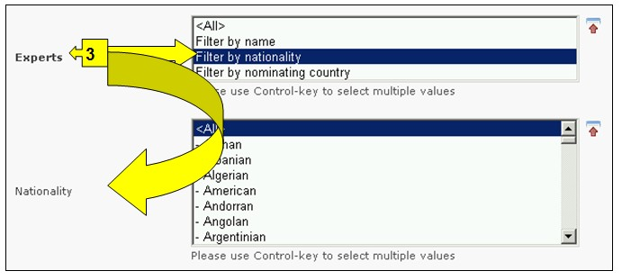
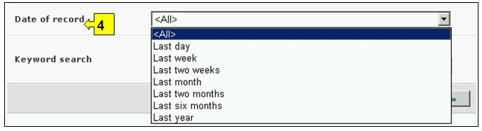
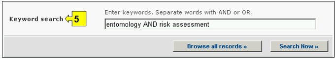

URL: http://bch.cbd.int/database/experts/
La lista de expertos fue establecida por la Conferencia de las Partes del Convenio sobre Diversidad Biológica (COP) cuando fue adoptado el Protocolo (véase Decisión EM-I/3). El fin de esta lista de expertos es prestar asesoramiento y otro tipo de apoyo, según corresponda y cuando se solicite, a las Partes que sean países en desarrollo y países con economías en transición, para realizar evaluaciones de riesgo, adoptar decisiones fundamentadas, desarrollar recursos humanos nacionales y promover el fortalecimiento institucional en lo que respecta a movimientos transfronterizos de OVM.
La COP-MOP, como órgano rector del Protocolo decidió que el acceso a la lista de expertos se gestionará a través del CIISB, donde pueden obtenerse formularios de nominación a fin de que las Partes puedan proponer expertos. Los reportes de la base de datos de la lista de expertos y el fondo voluntario son accesibles bajo la sección de reportes de las páginas del Protocolo. El Modulo 03 cubre el acceso a esos reportes.
La interfase de búsqueda para la base de datos Lista de Expertos puede ser obtenida en el vínculo de Búsqueda de Información en el menú desplegable en la barra de navegación, o en el vínculo en la barra lateral izquierda en la página Búsqueda de información o en el vínculo de la Lista de Expertos en el texto de la misma página.

Figura 57

Figura 58
Esta base de datos da la posibilidad a los para buscar los expertos en bioseguridad nominados por los Gobiernos.
Hay cinco cuadros para referenciar los criterios de búsqueda en la base de datos. Cada uno de estos tiene un menú desplegable en el que se puede seleccionar el criterio de búsqueda. La búsqueda por defecto es el primer elemento que aparece en la lista desplegada. En la parte derecha de cada cuadro, un botón le permite al usuario activar selecciones múltiples. Una vez se está en el modo de selección múltiple, es posible agregar más criterios haciendo clic en el criterio y presionando al mismo tiempo la tecla Ctrl (Control).
Cuadro 1 [Seleccione un país] Un menú desplegable presenta una lista de todos los países, de tal modo que los usuarios pueden seleccionar uno o más países específicos en cada búsqueda.

Figura 59
Cuadro 2 [Seleccione un grupo de países] Un menú desplegable presenta una lista que contiene las mayores agrupaciones geográficas y políticas de países y permite seleccionar solamente aquellos registros que han sido enviados por los miembros del grupo o grupos seleccionados.

Figura 60
Cuadro 3 [Expertos] permite al usuario aplicar filtros por nombre, nacionalidad o país que nomina el experto con el objeto de restringir la búsqueda a los registros que están específicamente relacionados con el criterio de selección.
Seleccionando uno o ambos criterios de filtro del menú desplegable se abren cuadros de búsqueda adicionales con un menú desplegable de opciones, cada una de los cuales está relacionada con el filtro seleccionado. Es posible utilizar múltiples filtros usando la tecla Ctrl. (Ej. Haciendo clic en el criterio relevante mientras se oprime la tecla Ctrl).

Figura 61
Cuadro 4 [Fecha del registro] permite al usuario que limite la búsqueda de acuerdo con la fecha en la que el registro ha sido ingresado al CIISB. El menú desplegable proporciona un número de opciones para limitar la búsqueda solamente a aquellos registros que han sido enviados dentro del período de tiempo seleccionado (Ej: ‘último día’, ‘último mes’, ‘último año’, etc.).

Figura 62
Cuadro 5 [Búsqueda por palabras clave] Brinda la oportunidad de utilizar palabras clave para restringir la búsqueda. El usuario puede utilizar la sintaxis estándar de palabras clave (combinación de los operadores Y/O) para buscar con múltiples palabras, o partes de palabras (Ej. “Importación O Exportación”). La búsqueda con palabras clave permite obtener solamente registros que contengan el texto exacto y no sinónimos que no hayan sido insertados (Ej: Una búsqueda con la palabra clave “Maíz” producirá una lista de registros que contienen la palabra “Maíz” pero no los registros que contengan “Zea mays”).

Figura 63
La página de búsqueda ofrece tres botones para obtener la lista de registros. El botón Busque Ahora (Tanto en la parte superior como inferior de la interfase de búsqueda) permite al usuario activar una búsqueda basada en los criterios seleccionados en los cuadros de la tabla de búsqueda. Los resultados de búsqueda son ordenados alfabéticamente, por defecto, de acuerdo con el nombre de país. El botón Busque todos los registros (En la parte inferior de la interfase de búsqueda) permite al usuario obtener una lista de todos los registros en esta base de datos.

Figura 64
Las páginas de Resultados de Búsqueda poseen una ventana de ordenamiento arriba de la lista de los registros encontrados. Esta puede utilizarse para ordenar los registros de acuerdo con criterios específicos para esa categoría de información. Observe que los resultados cambiarán cuando el usuario ajusta los criterios de búsqueda.

Figura 65
Ejemplo. Un usuario desea encontrar expertos de Europa que tienen experiencia en silvicultura y evaluación de riesgo. El usuario (i) selecciona Eurasia – Europa (todos los países) en el cuadro Área Geográfica, grupo de país, y (ii), ingresa silvicultura y evaluación de riesgo en el cuadro de palabras clave.
Activando el botón Busque Ahora brinda los resultados de búsqueda. Los resultados de búsqueda muestran una lista de registros, agrupados de acuerdo con el país. La información detallada de cada experto puede ser analizada seleccionando el nombre del experto, que abre el registro correspondiente.

Figura 66

Figura 67